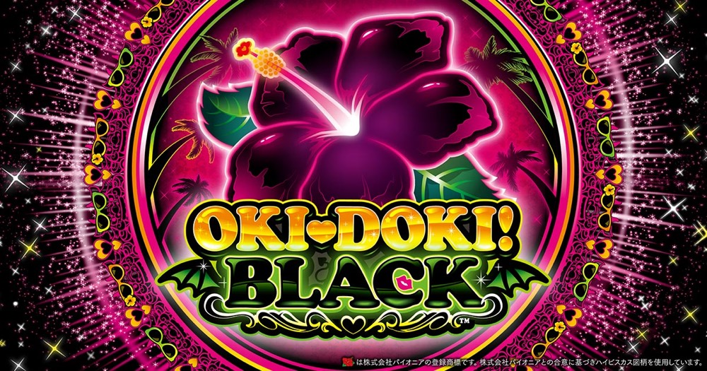

沖ドキ！BLACK
60G BIGと25G REGから、32Gの天国・黒ドキ・裏ドキへ。
- 導入
- 2024年7月
- メーカー
- ミズホ
- 分類
- パチスロ
主要スペック
ハイビスカス点灯でBIGまたはREGへ進み、BONUS後は32Gを毎回カウント。天国・ドキドキ・超ドキドキ・保証に加え、BLACK固有の黒ドキと裏ドキ、1G連、ロングフリーズまでを専用フローで体験できます。
- BIG60G約210枚・REG25G約90枚・純増約3.5枚/G
- 天国約75%・ドキドキ約80%・超ドキドキ約90%
- 黒ドキは次回天国以上、裏ドキはBONUS当選でロングフリーズ
沖ドキ！BLACKの見どころと計算条件
ハイビスカス点灯でBIGまたはREGへ進み、BONUS後は32Gを毎回カウント。天国・ドキドキ・超ドキドキ・保証に加え、BLACK固有の黒ドキと裏ドキ、1G連、ロングフリーズまでを専用フローで体験できます。
沖ドキ！BLACKを数字で早分かり
BONUSごとに32Gを数え、天国・ドキドキ・超ドキドキ・保証・黒ドキ・裏ドキの内部ルートを結果へ残します。
30秒で分かる沖ドキ！BLACK
ハイビスカス点灯でBIG・REGを獲得し、BONUS後32Gの連チャンを天国・ドキドキ・黒ドキ・裏ドキで伸ばす告知型AT機です。
こんな遊び方に向いている
- 32Gを最後まで数えてPUSHで連チャンを見たい
- 60G BIG・25G REGと1G連を個別に確認したい
- 黒ドキや裏ドキの内部ルートを結果で知りたい
遊ぶ前に確認したいこと
- 設定4は非搭載で1・2・3・5・6を抽選
- BIG60G約210枚・REG25G約90枚
- 非公表のモード移行率は体験用代表値
ハイビスカス点灯でBONUS
通常時は毎ゲームBONUSを抽選し、ハイビスカス点灯で当選を告知します。BIGは60G・平均約210枚、REGは25G・平均約90枚で、どちらも純増約3.5枚/Gです。
設定は実機どおり1・2・3・5・6から抽選。設定別の初当り、BIG、REG、出玉率とBONUS振り分けを結果へ反映します。
BONUS後32Gと1G連
BONUS終了後は32Gをカウントし、天国以上なら32G以内の次回BONUSを判定します。天国・ドキドキ・超ドキドキでは12.5%、保証では6.0%で規定ゲーム数0G短縮を抽選し、当選時はBIGの1G連です。
専用画面では32Gを進めたあと、PUSHで再点灯・モード終了・黒ドキを開き、次のBIG・REGも別のPUSHで表示します。
天国・ドキドキ・超ドキドキ
天国モードは約75%でループし、期待獲得枚数は約1310枚。ドキドキモードは約80%、超ドキドキモードは約90%でループします。
ドキドキ・超ドキドキ転落時は保証モードへ進み、32G以内のBONUSを1回追加してから終了または黒ドキを判定します。
BLACK固有の黒ドキと裏ドキ
有利区間リセット後の一部で黒ドキへ移行すると、次回BONUS後の天国以上が濃厚です。見た目で判別できないため、専用結果で内部ルートを表示します。
裏ドキ滞在中はBONUS当選でロングフリーズが発生し、BIG＋BIG1G連＋超ドキドキへ。裏ドキ移行率は非公表のため、サイトでは低確率の体験用代表値です。
固定条件と簡略化する範囲
- 約32G/50枚・1,000円46枚貸し・5.2枚交換で固定
- 設定別初当り・BIG・REG・出玉率、BONUSゲーム数と純増は公開値
- 天国約75%・ドキドキ約80%・超ドキドキ約90%、1G連短縮率を個別判定
- モード初回振り分け、黒ドキ・裏ドキ移行率は体験用代表値
- 19,000枚到達時はコンプリート表示
平均Gと投資目安の計算
掲載するBONUS初当り約1/288.7は設定1基準です。当サイトでは50枚あたり32G、1,000円46枚貸しの固定条件から、設定1基準の平均投資目安を約9,800円と計算します。
シミュレーターでは設定1・2・3・5・6を均等抽選します。設定1・2・3・5・6で公開されている初当り値を個別に使います。公開されていない特化ゾーン・上位到達率の設定差は加えません。 換金は5.2枚交換で固定し、結果とランキングに設定を表示します。
シミュレーション結果の見方
初当りハイビスカス点灯までのゲーム数
BONUSBIG・REGの回数と最大32G連
内部モード天国・保証・黒ドキ・裏ドキ・ドキドキへの到達
最終収支差枚と5.2枚交換の収支目安
結果は自動で「マイ記録」に保存され、同じ機種を何回試したか、最高収支、勝率をあとから確認できます。
簡易シミュレーターについて
ボーナス初当り・BONUS連・超ドキドキモードの流れを固定条件で体験できます。JavaScriptを有効にすると、この位置にシミュレーター、演出、マイ記録、機種別ランキングが表示されます。
結果は娯楽・確率理解のための参考表示です。金銭的価値や交換価値はなく、実際の勝敗や収支を保証しません。18歳未満の方の利用はお控えください。
沖ドキ！BLACKのよくある質問
沖ドキ！BLACKはどんな台？
ハイビスカス点灯でBIGまたはREGへ進み、BONUS後は32Gを毎回カウント。 BIG60G約210枚・REG25G約90枚・純増約3.5枚/Gが主な確認ポイントです。
沖ドキ！BLACKの平均投資目安は？
設定1基準のBONUS初当り約1/288.7と、50枚あたり32G・46枚貸しの固定条件から、平均9,800円を目安として表示します。実際の設定や遊技状況で結果は変わります。
設定とゲームの流れはどう抽選する？
開始時に設定1・2・3・5・6から1つを均等抽選し、BONUS初当り後はBIG・REG、32G連、天国・ドキドキ・超ドキドキ・保証・黒ドキ・裏ドキを順番に判定します。設定と最高内部モードは最終結果に表示します。
収支はどう計算する？
1,000円46枚貸し・5.2枚交換の固定条件で投資、換金、収支目安を計算します。実店舗の再プレイ、持ちメダル、端数処理は含みません。